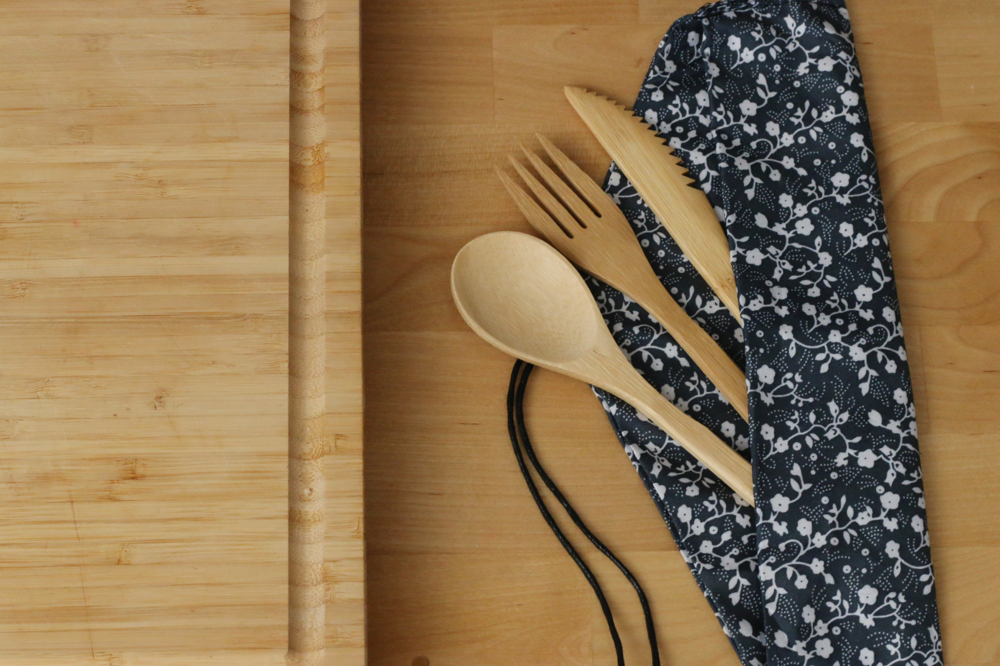

The Zero Waste Heirarchy
- Refuse
- Reduce
- Reuse/Repair
- Recycle
- Rot(compost)
- Borrow and share
- Buy used
Just say no! This can seem hard at first (trust me, I like free things as much as the next guy), but it gets easier over time. Say no to freebies you don't need and won't use. Say no to straws if you don't require them.
Look at your waste. What do you get rid of the most? Maybe it's the extra avocado you bought that went bad or the ziploc baggies from five days of work lunches. Either way, what can you do to reduce your waste? Maybe think twice about buying that avocado next week. Maybe take a resuable baggy or container for your lunch instead
If it's broke, fix it! If you can't or don't want to pay for someone else to do it,
consider giving it away to someone who can. List your item for free on craigslist or
on a buy nothing page. You never know who will find treasure in your trash. Reuse your stuff!
Wear your clothes until they no longer function instead of buying a new outfit for every occassion.

When absolutely necessary, recycle. Choose glass and alumimum over plastic. Offer up your empty kombucha bottles on freecycle.
When things come up and you can't make it to those leftovers from Thursday night, compost your food waste. When food waste is discarded via land fills and placed in suffocating plastic garbage bags, methane is released. Instead, your food waste can be brought back to the soil through composting and used to grow new produce. What's more beautiful than that?
Take books out from the library instead of buying them. Need that sewing machine one time? Find someone who already has one or join a makerspace where you can borrow lots of different tools. Does your friend have a wedding to go to and needs a suit? Let him borrow yours! The more sharing, the less waste.
Don't have a friend with a suit your size? Look at thrift stores, eBay, and Poshmark before buying new. There is most likely someone somewhere trying to sell whatever you're in the market for. Keep used items out of landfills by giving them new life. The best part is, when you're done with your suit, resell it! An infinite loop...
Kitchen
- Your diet
- Your tools
- Your water
- Cleaning Products
Eat plant-based! Save water, save the animals, and feel better!

Get your kitchen tools secondhand. Find an estate sale or go to a thrift shop. Maybe you only need that kitchen mixer once a year- borrow from a friend! Swap paper towels and napkins for cloth towels and napkins.
Run the dishwasher without pre-washing by hand (washing dishes is its job not yours!). Eating plant-based is the biggest water saving decision you can make.
The great news is that you can make your own. Dilute white vinegar with water for an all purpose cleaning spray. You can even add citrus peels or essential oils to give it the scent you desire. Swap out swiffer pads for a cloth pads you can wash or a mop with a washable mop head. Did you know you can compost your dust, lint, and even hair?
Bathroom
- Your tools
Swap your plastic toothbrush for a bamboo toothbrush you can compost. Use shampoo and soap bars instead of buying bottles. Or buy in bulk by bringing your own containers. Swap out tissues for reusable hankies. Make your own makeup pads from an old tshirt. Buy recycled toilet paper or better yet- a bidet attachment! Look at your toiletries and decide if you really need them all. What can you do without? What can you make on your own? What can you buy in bulk?
Outside the home
Your choices outside the home make a difference too. Bring your own containers, napkins, and utensils when eating out and for taking home leftovers. Pack your lunch in resuable and washable containers to avoid throwing out ziploc bags. Bring your own water bottle. Air dry your hands or use a hand dryer instead of taking paper towels. Carpool when you can. Bring your own reusable bags when out shopping. Better yet, always keep one on you just in case you need to pick something up. Resuable bags are more durable and they keep plastic bags out of landfills. Try to use what you already own or if you don't own any, pick some up at secondhand stores for cheap! 